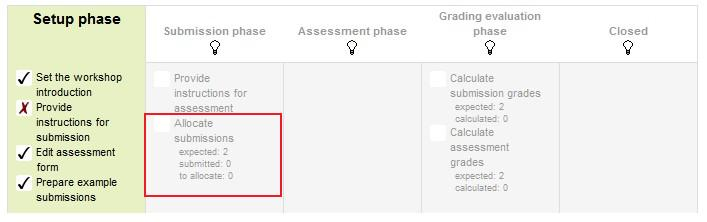

Tutorial
Tutorial Membuat Workshop
1. Dengan menghidupkan mode editing, di bagian yang ingin Anda tambahkan Workshop Anda, klik "Add an activity or Resource" link dan pilih Workshop. Semua pengaturan dapat diperluas dengan mengklik "Expand All" di link kanan atas.
2. Isi form Workshop sesuai dengan kriteria yang akan ditentukan. Kriteria ini diisikan oleh guru yang akan membuka Workshop
3. Centang kotak Late Submission, ini diperlukan untuk memungkinkan siswa menyerahkan setelah batas waktu. Setiap pengajuan akhir tidak dapat diedit oleh siswa, mereka hanya memiliki satu kesempatan untuk mengajukan.
Jika pengiriman terlambat diperbolehkan, tidak ada cara untuk secara otomatis mengalokasikan penilai kepada mereka. Guru perlu secara manual mengalokasikan penilai untuk pengiriman terlambat.

Setelah pengaturan Workshop ini telah disimpan, Guru dapat mengakses pengaturan lebih lanjut yang berkaitan dengan penilaian mengalokasikan.
Menurut Grading Strategy yang dipilih dalam pengaturan grading, guru akan mendapatkan yang sesuai bentuk penilaian awal untuk mengedit dengan mengklik tombol 'Edit assessment form' di halaman pertama dari setup Workshop untuk tugas. Grading Strategy dapat menjadi salah satu penilaian Kumulatif, Komentar, Jumlah kesalahan atau Rubrik. Guru dapat mengatur setiap kriteria secara rinci dalam bentuk penilaian.
1. Jumlah ulasan: Berikut guru mengambil antara 0 dan 30 ulasan untuk baik setiap pengiriman atau per resensi. Itulah guru dapat memilih untuk mengatur jumlah tinjauan setiap pengiriman harus memiliki atau jumlah tinjauan setiap siswa harus melaksanakan
2. Mencegah Ulasan: Jika guru ingin untuk siswa dari kelompok yang sama untuk tidak pernah meninjau pekerjaan satu sama lain, karena kemungkinan besar itu adalah pekerjaan mereka terlalu dalam pengajuan kelompok, maka mereka dapat memeriksa kotak ini dan moodle akan memastikan bahwa mereka hanya dialokasikan siswa lain dari kerja kelompok mereka untuk mengakses
3. Hapus alokasi saat ini: Memeriksa kotak ini berarti bahwa setiap alokasi manual yang telah ditetapkan dalam menu Alokasi manual akan dihapus
4. Dapat mengakses tanpa pengajuan: Memiliki kotak ini diperiksa memungkinkan siswa untuk menilai pekerjaan siswa lain 'tanpa sudah disampaikan pekerjaan mereka sendiri.
5. Tambahkan penilaian diri: Pilihan ini ketika diperiksa memastikan bahwa serta menilai karya siswa lain mereka juga harus menilai sendiri. Ini adalah pilihan yang baik untuk mengajar siswa bagaimana menjadi tujuan untuk pekerjaan mereka sendiri.
Perbandingan dengan penilaian terbaik mencoba untuk membayangkan seperti apa penilaian yang benar-benar adil.
Sebagai contoh, seorang guru menggunakan Jumlah kesalahan sebagai strategi penilaian satu tugas. Strategi ini menggunakan beberapa pernyataan dan penilai hanya perlu memeriksa apakah pernyataan yang diberikan lulus atau gagal. Artinya, mereka hanya perlu memilih 'ya' atau 'tidak' untuk setiap kriteria dalam bentuk penilaian. Dalam hal ini, ada tiga penilai, Alice, Bob dan Cindy. Dan bentuk penilaian mengandung tiga kriteria. Penulis akan mendapatkan 100% kelas jika semua kriteria yang lulus, 75% jika dua kriteria lulus, 25% jika hanya satu kriteria dilewatkan dan 0% jika penilai memberikan 'tidak' untuk ketiga pernyataan. Berikut adalah penilaian mereka berikan kepada satu pekerjaan tertentu:
Bob: yes/yes/no
Cindy: no/yes/yes